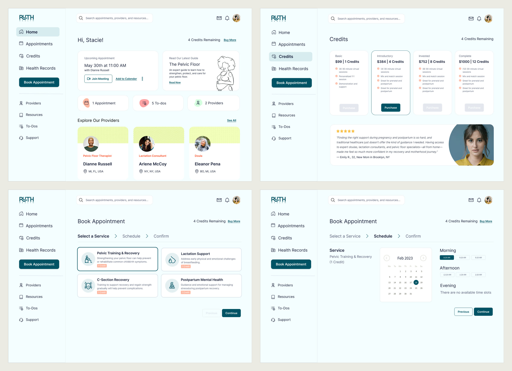
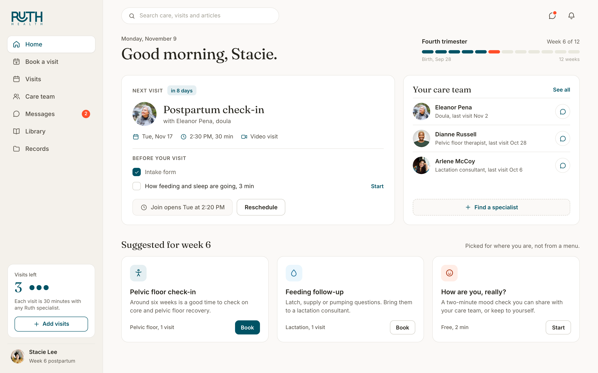
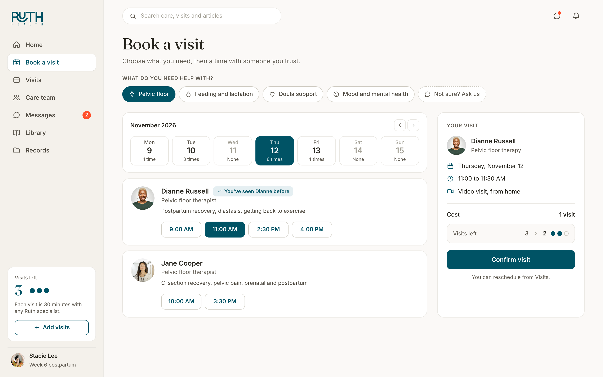
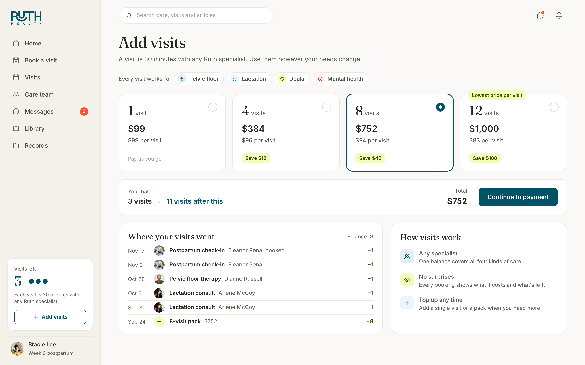

Ruth Health offered prenatal and postpartum care by video: pelvic floor therapists, lactation consultants, doulas and mental health support, all paid for from one balance of credits. In 2022 I led the ground-up design of the patient web app and its design system. In 2026 I went back to the core flows and redesigned them with what I know now. The new screens on this page are that redesign, not what shipped.
After a birth, care tends to arrive in pieces. A pelvic floor therapist for recovery, a lactation consultant for feeding, a doula for the first weeks at home, someone to talk to about mood. Each is usually a separate provider, a separate booking and a separate bill, landing at the most exhausting point in a person's life.
Ruth put all four on one platform, by video, and already had an MVP seeing patients. The job in 2022 was to turn that MVP, and Ruth's freshly updated brand guidelines, into a complete patient web app and a design system the team could build on.
One balance for every specialist. Paying per session would have meant a checkout for every visit and a different price for every kind of care. I designed a credit model instead: buy a pack, spend one credit on a 30-minute visit with any specialist, and mix and match as needs change. It turned four services into one product and gave Ruth packaged pricing, which in the designs ran from a single visit at $99 to twelve for $1,000.

A full web app around it. I designed the patient experience end to end: onboarding that asks where you are in pregnancy or postpartum, a home dashboard, booking, appointments, providers, resources and to-dos, plus the design system underneath, built from Ruth's updated brand guidelines.
Humayun took our MVP functionality and updated brand guidelines to create a design system and product experience we could be proud of, while keeping the mothers we work with firmly in mind.
Looking back at the 2022 screens, the credit model held up. The interface around it asked too much of a tired person. I redesigned the core flows in 2026, keeping Ruth's logo and palette, and bringing back the warm neutrals from the brand guidelines that the first version had traded for a clinical mint.
Start from her week, not the menu. The 2022 home led with counts, one appointment, five to-dos, two providers, then a directory of specialists. Onboarding already asked where she was in pregnancy or postpartum, so the redesign uses it. Home opens on her week of the fourth trimester, the next visit with its prep checklist inline, her care team, and the visits that make sense for that week.

Book a person, not a service. In postpartum care, continuity matters. Someone who has already walked one therapist through her birth shouldn't have to start again with a stranger. The 2022 flow asked for a service, then a time, and only showed who she'd see at the end. The redesign puts it on one screen: pick what you need and a day, and every specialist shows their open times on their own card, with the one she has seen before marked. Three steps became one screen and a confirmation.

Show credits as visits. "4 Credits Remaining" sat in the header of every 2022 screen, but never said what a credit was. In the redesign the balance lives in the sidebar as visits, every booking shows what it costs and what will be left before you confirm, and the packs lead with the price per visit, so the value of a bigger pack is plain: $99 a visit on its own, $83 in the twelve-pack. A short ledger shows where every visit went.

In 2022 Ruth got a complete patient web app and a design system built from their new brand, with the credit model at the center of it. The 2026 redesign is a study, not a shipped product: it keeps what worked and changes the parts that made a tired person do the work.
It's the kind of problem I like most, where the business model and the interface have to agree with each other. Credits only work if people can see what they're spending.